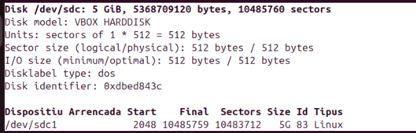
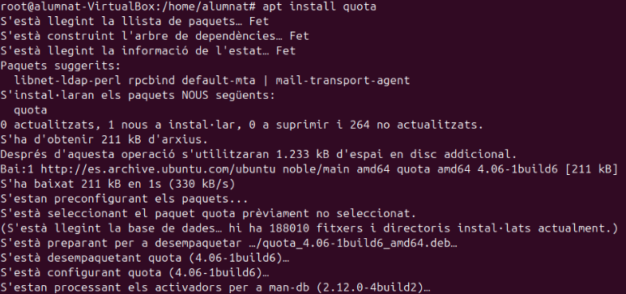
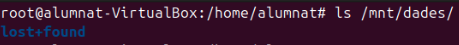
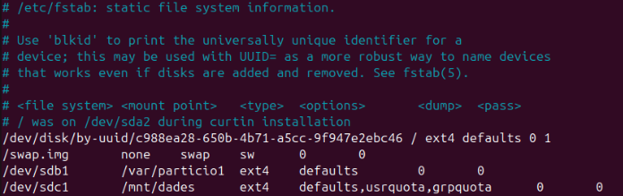
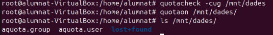
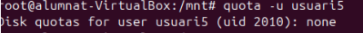
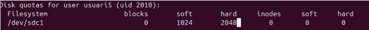
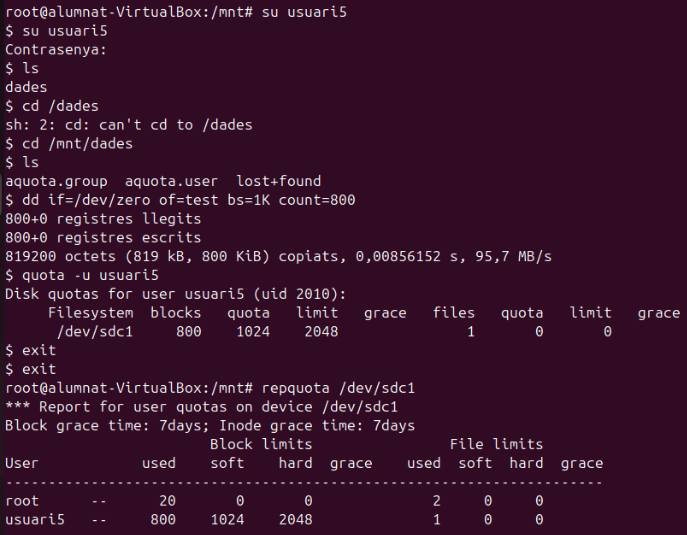

Quotes disc
5.Quotes de disc
Les quotes de disc són restriccions aplicades a l'ús d'emmagatzematge en un sistema, com ara Ubuntu. Aquestes limitacions es poden establir tant per a usuaris individuals com per a grups, amb l'objectiu de gestionar millor l'espai disponible i evitar un ús innecessari o excessiu. Són especialment útils en servidors o sistemes amb múltiples usuaris. Les quotes poden limitar tant la quantitat d'espai ocupat com el nombre total de fitxers que es poden crear.
Crear una partició i formatar el disc
Començarem creant una partició nova amb tot l'espai del disc i utilitzarem el format d'arxius ext4.

Instal·lació de Quota
Per configurar les quotes de disc, hem d'instal·lar el paquet quota:
sudo apt update
sudo apt install quota

Crear la carpeta per a les dades
Crearem una carpeta anomenada dades:
mkdir /mnt/dades

Configurar muntatge permanent amb quotes
Editarem l'arxiu /etc/fstab per fer que el muntatge sigui permanent i per habilitar les quotes d'usuari i de grup.
Afegirem les següents opcions de muntatge al sistema de fitxers corresponent:
usrquota,grpquota
Després de modificar l'arxiu fstab, reiniciarem el sistema:
sudo reboot

Configurar i activar les quotes
Comprovarem el muntatge i afegirem els fitxers de les quotes d'usuari i de grup amb les següents comandes:
quotacheck -cug /mnt/dades
quotaon /mnt/dades

Crear un nou usuari per provar les quotes
Crearem un nou usuari anomenat usuari5:
sudo adduser usuari5

Comprovar les quotes assignades
Podem verificar les quotes assignades a usuari5 amb:
quota -u usuari5
Si encara no té cap quota assignada, podem configurar-les amb la següent comanda:
sudo edquota -u usuari5

L'arxiu de configuració que editarem contindrà els següents paràmetres:
- Filesystem (/dev/sdc1): Sistema de fitxers o partició on s'apliquen les quotes.
- blocks: Espai en disc utilitzat per l'usuari (en blocs).
- soft: Límits "soft" (recomanats). Per exemple,
1024blocs. - hard: Límits "hard" (no es poden excedir). Per exemple,
2048blocs. - inodes: Nombre d'inodes (fitxers) utilitzats per l'usuari.
- soft: Límits "soft" d'inodes (opcional).
- hard: Límits "hard" d'inodes (opcional).
Exemple de configuració
Filesystem blocks soft hard inodes soft hard
/dev/sdc1 500 1024 2048 0 0 0
Prova amb fitxers
Accedirem a l'usuari usuari5, crearem un fitxer anomenat test amb dades de /dev/zero de 800 KiB:
dd if=/dev/zero of=test bs=1K count=800
Comprovar les quotes
Per veure un informe detallat del disc i les seves quotes, utilitzarem:
```bash repquota /dev/sdc1
